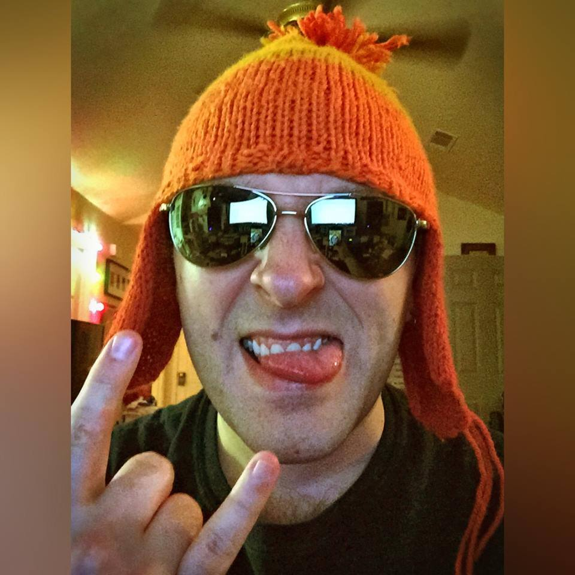

Judges
Richie Branson

Richie Branson (born Marcus Brown II) is a music composer and producer who has worked with a variety of notable brands including Marvel Studios and Def Jam Recordings.
As a composer, Richie has worked on a multitude of notable projects, including providing additional score for the hit MMORPG Marvel Heroes, and producing soundtrack for the mobile game Mission: G-ROK, backed by Grammy award winning rapper T.I. and legendary music mogul Russell Simmons.
He is also an accomplished hip-hop artist, gaining notoriety in 2012 after penning multiple songs for Adult Swim and touring with mc chris. After gaining a loyal following as a hip-hop performer, he achieved billboard-charting success with the release of his “From Guardia With Love” album.
After his nostalgia-filled videogame influenced raps went viral on various major gaming blogs (including Kotaku, IGN, Destructoid, and more), Branson began an intense study curriculum in computer programming. Armed with experience coding in C# and Javascript, he began developing his own games in late 2014.
Richie Branson and Kadesh Flow made up Team Krunktaku and won the VPC III handily last year.
Kadesh Flow

Kadesh Flow brings realism, consciousness, and nerd-life together in riveting flow format. He has composed original music for Toonami Asia and for web series such as Sassy Batman and Buyer's Remorse (French Kiss Records), performed live at the Cannes Film Festival, shared the stage with the likes of Caroline Shines, The Revivalists, B.o.B., CBDB, and others. He has been publicly lauded by outlets such IGN and Kotaku
Richie Branson and Kadesh Flow made up Team Krunktaku and won the VPC III handily last year.
Thomas Quinlan
Brandon Hood
Brandon L Hood aka "President Hoodie/Sir Hoodie/Hoodie/lolidunno" is the Founder & Project Manager of blog/netlabel/community Chiptunes = WIN (chiptuneswin.com), Dept Head of MAGFest Music (magfest.org), bassist for VGM metal band Lords of Thunder (fb.com/lordsofthunder), ridiculous host of the Brandon Talks' podcast on geekbeatradio (fb.com/brandontalks), and all around fun-loving rascally goob.
Also, Sam Adams Cherry Wheat is the best thing ever. #FiteMeBro ᕙ( •̀ ︿•́ )ᕗ
\m|♥|m/